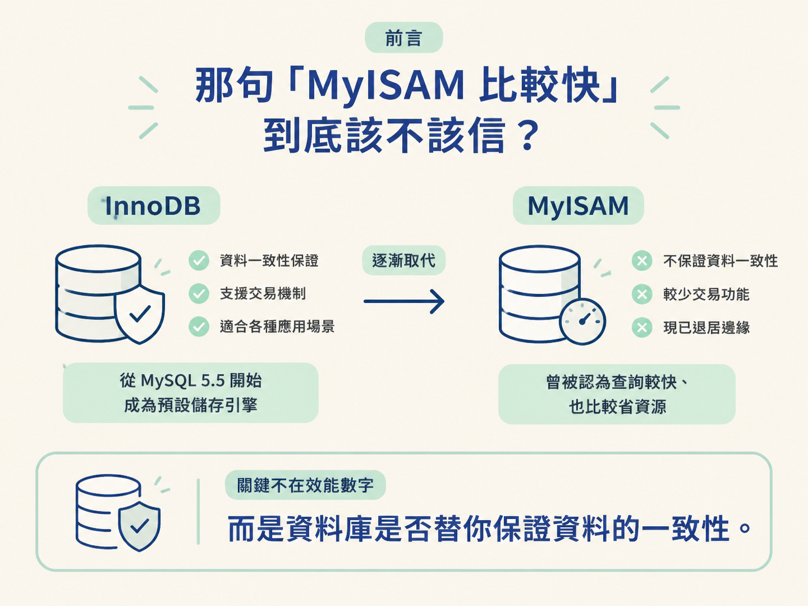
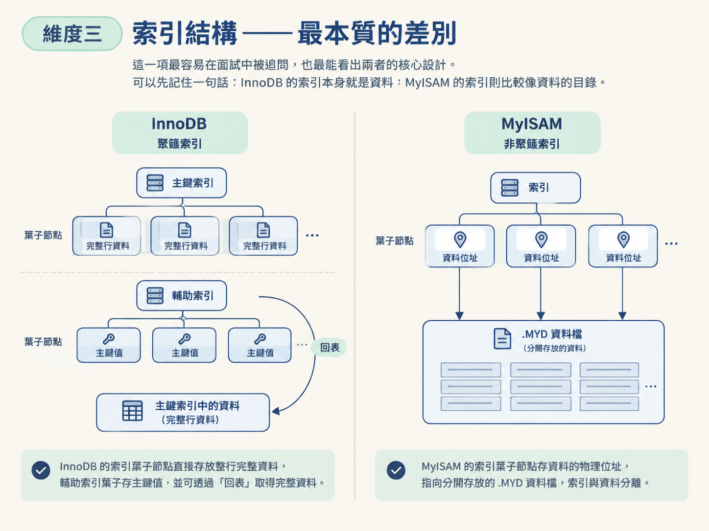
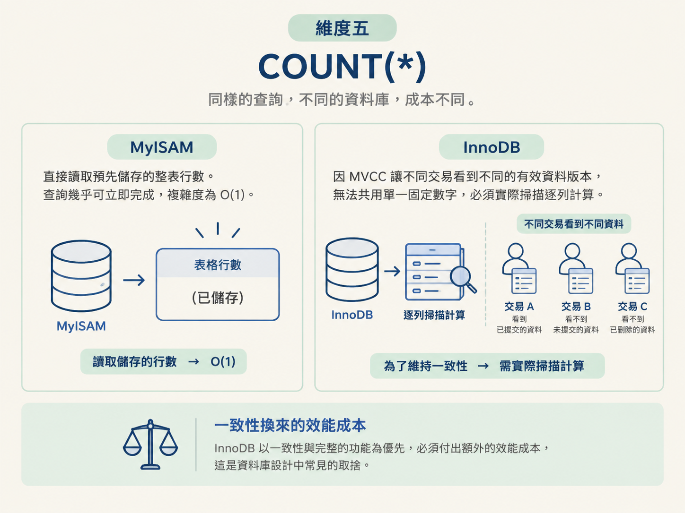
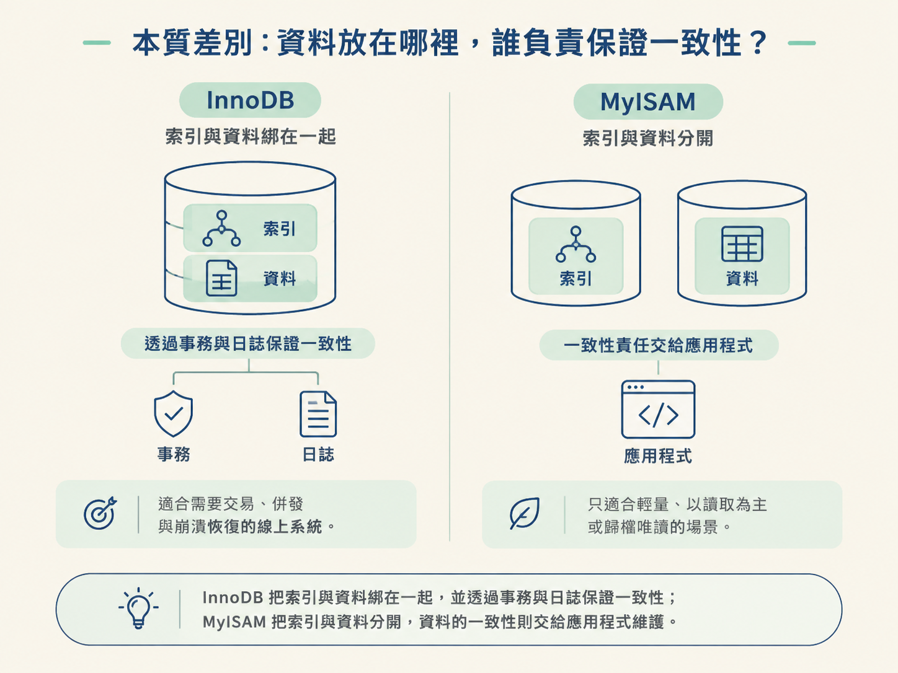

搜尋 MySQL 儲存引擎的選型建議時，你可能看過這種說法：「MyISAM 查詢比較快，也比較省資源，小表用它就好。」但從 MySQL 5.5 開始，InnoDB 已經取代 MyISAM，成為 MySQL 的預設儲存引擎；現在的新專案，也幾乎一律選擇 InnoDB。
如果 MyISAM 真的又快又省，為什麼最後會被 InnoDB 取代？答案不在單一的效能數字，而在於資料庫要不要替你保證資料的一致性。

上一課我們走到 SQL 生命週期的最後一關，也就是儲存引擎。這一課就把這個角色拉近來看。搞懂 InnoDB 與 MyISAM 的差別，等於先把後面會遇到的事務、回表、鎖與崩潰恢復，放到正確的地基上。
兩者的差異，可以先用五個維度快速定位。接下來再逐項拆開，看這些差異為什麼會出現，以及它們會影響什麼。
| 維度 | InnoDB（預設） | MyISAM |
|---|---|---|
| 事務 | 支援 ACID，可提交與回滾 | 不支援事務 |
| 鎖粒度 | 行級鎖 | 表級鎖 |
| 索引結構 | 聚簇索引：主鍵葉子存放完整資料行 | 非聚簇索引：索引與資料分開存放 |
| 外鍵 | 支援 | 不支援 |
| COUNT(*) | 需掃描計算，成本較高 | 直接讀取已儲存的行數，O(1) |
想像一個轉帳流程：先從帳戶 A 扣款，再把金額加到帳戶 B。這兩個動作必須綁在一起，不能只完成一半。
InnoDB 支援事務，代表這一組操作可以「要嘛全部成功、要嘛全部失敗」。中途發生錯誤時可以回滾；即使資料庫突然斷電，也能依靠日誌恢復到一致狀態。
MyISAM 則完全不支援事務。每一次寫入都會直接生效，沒有回滾機制。假設庫存已經扣除，但下單動作接著失敗，庫存與訂單就可能永遠對不起來。對轉帳、下單、扣庫存這類場景來說，這不是小缺點，而是資料正確性的風險。
MyISAM 因為沒有事務，也不需要維護 Undo Log 與 Redo Log 這套機制，所以寫入時的額外成本比較小。這是「MyISAM 比較快」這個印象的來源之一；但它省下的是日誌與一致性機制的成本，代價則由資料可靠性承擔。
當兩個交易同時修改同一張表時，資料庫需要先決定：到底要鎖住多大的範圍？這會直接影響其他操作能不能同時進行。
InnoDB 支援行級鎖。更新某一列時，通常只會鎖住相關的那幾行，其他交易仍然可以操作同一張表中的其他資料列。因此，多個交易比較有機會並行工作。
MyISAM 只有表級鎖。只要發生寫入，整張表就可能被鎖住，其他寫入只能排隊。對讀多寫少的表來說，這個限制未必立刻造成問題；但只要寫入量增加，表鎖就容易變成明顯的瓶頸。
所以，真正的差別不是「行級鎖聽起來比較細」而已，而是：如果多個交易需要同時修改同一張表的不同行，InnoDB 可以讓它們盡量互不干擾，MyISAM 則做不到。這也是 InnoDB 能支撐線上交易系統的重要原因。
這一項最容易在面試中被追問，也最能看出兩者的核心設計。可以先記住一句話：
InnoDB 的索引本身就是資料；MyISAM 的索引則比較像資料的目錄。

InnoDB 採用聚簇索引（Clustered Index）。它的主鍵索引葉子節點存放的不是資料指標，而是一整行完整資料。
因此，找到主鍵，就等於找到了整筆資料。由於同一筆資料不能同時放在多個地方，一張 InnoDB 表只能有一個聚簇索引，預設通常就是主鍵。
其他欄位建立的索引，稱為輔助索引（Secondary Index）。輔助索引的葉子節點存放的是主鍵值。當你透過輔助索引查詢，而查詢需要的欄位又不在這個索引裡時，資料庫就會先取得主鍵，再回到主鍵索引找出完整資料列。這個動作就是常說的「回表」。
MyISAM 採用非聚簇索引（Non-Clustered Index）。它的索引檔，也就是副檔名為 .MYI 的檔案，會和資料檔 .MYD 分開存放。
MyISAM 索引的葉子節點存放的是資料的物理位址，而不是主鍵值。主鍵索引與輔助索引在結構上沒有本質差異，兩者都只是用來指向資料所在的位置。資料列則按照插入順序堆放，和索引的排序沒有綁在一起。
這個差異會影響許多後續設計。以自增主鍵為例，InnoDB 的資料會按照主鍵順序存放。使用自增主鍵時，新資料通常會一路追加到後面，比較不容易頻繁造成頁分裂。
MyISAM 的資料則按照插入順序堆放，因此主鍵是否自增，對資料頁排列的影響就沒有那麼大。
外鍵可以看成資料庫替你守門的一道防線。假設子表存放訂單明細，裡面的商品 ID 就應該對應到父表中確實存在的商品。
InnoDB 支援外鍵約束，可以由資料庫保證「子表的欄位值一定要對應到父表存在的主鍵」。刪除父表資料時，也可以依照設定進行連帶處理。
MyISAM 不支援外鍵。參照完整性只能由應用程式自行維護。這代表每個新增、修改與刪除流程都要由程式碼小心處理；只要有一條流程漏掉檢查，資料庫就可能留下找不到對應父資料的孤兒資料。
對交易型系統來說，外鍵等於多一層資料庫保護。沒有外鍵時，一致性就幾乎全壓在應用程式上。
這一項常被拿來當陷阱題。對 MyISAM 來說，執行 SELECT COUNT(*) 幾乎可以直接完成，因為它會把整張表的行數單獨儲存起來。查詢時只要讀出這個數字，複雜度就是 O(1)。
InnoDB 則通常需要實際掃描資料並計算行數。為什麼不也直接存一個總數就好？關鍵在於事務與 MVCC，也就是多版本併發控制。
同一張表在不同交易眼中，看到的有效資料可能不一樣。你的交易可能看不到其他交易剛插入但尚未提交的資料，也可能看不到其他交易剛刪除的資料。換句話說，「這張表現在有幾行」不是所有交易都能得到同一個答案。
既然行數會隨著交易的視角改變，InnoDB 就不能只靠一個固定數字回答 COUNT(*)。這是 InnoDB 為了維持一致性所付出的成本，也說明了資料庫設計裡常見的取捨：功能更完整，通常就需要付出額外的效能成本。

把前面五個維度收斂成一句話：
InnoDB 把索引與資料綁在一起，並透過事務與日誌保證一致性；MyISAM 把索引與資料分開，資料的一致性則交給應用程式維護。

因此，InnoDB 適合需要交易、併發處理與崩潰恢復的線上系統。MyISAM 則比較適合輕量、單純，而且主要以讀取為主的場景。這就是為什麼 InnoDB 成為預設引擎，而 MyISAM 逐漸退居邊緣。
MyISAM 並不是在所有情況下都沒有價值。少數極端場景仍可能考慮它，例如需要依賴 O(1) 的 COUNT(*) 做統計、資料一次寫入後就不再修改的歸檔唯讀表，或硬體資源極度受限的環境。
MyISAM 的磁碟佔用較小，而且只快取索引。不過，對一般新專案來說，並不建議優先選擇 MyISAM。與其說 MyISAM 不好，不如說它原本服務的場景，現在大多已經被 InnoDB 或其他工具覆蓋。
InnoDB 與 MyISAM 可以從事務、鎖粒度、索引結構、外鍵與 COUNT(*) 五個維度來比較。
其中最本質的差異是索引結構：InnoDB 的主鍵葉子節點直接存放完整資料列，輔助索引存放主鍵值，因此可能需要回表；MyISAM 則讓索引與資料分開，索引存放資料的物理位址。
InnoDB 用較高的寫入成本，換來事務、一致性、併發能力與崩潰恢復；MyISAM 則用較輕量的結構，換來一致性必須由應用程式自行承擔。理解這條取捨主線後，下一步就能把整個 MySQL 課程串起來：為什麼許多設計最後都在想辦法少碰磁碟。